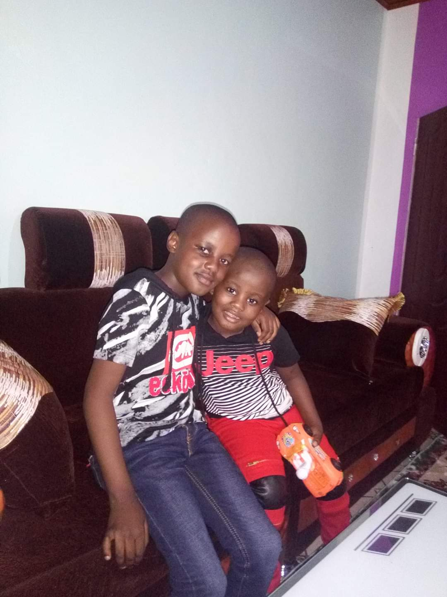

THE LITTLE YEARS
The Toy Car Era
A photograph of Desmond with a toy car. Sometimes the simplest childhood photographs become some of the most interesting pieces of a family archive. This one deserves its place in the collection.